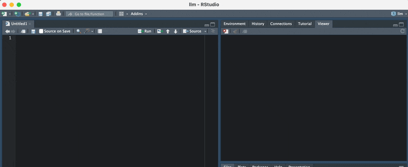

Intro
chattr is an interface to LLMs (Large Language Models). It enables interaction with the model directly from the RStudio IDE. chattr allows you to submit a prompt to the LLM from your script, or by using the provided Shiny Gadget.
chattr’s main goal is to aid in EDA tasks. The additional information appended to your request, provides a sort of “guard rails”, so that the packages and techniques we usually recommend as best practice, are used in the model’s responses.
Available models
chattr provides two main integration with two main LLM back-ends. Each back-end provides access to multiple LLM types:
| Provider | Models |
|---|---|
| OpenAI |
GPT Models accessible via the OpenAI’s REST API. chattr provides a convenient way to interact with GPT 3.5, and DaVinci 3.
|
| LLamaGPT-Chat | LLM models available in your computer. Including GPT-J, LLaMA, and MPT. Tested on a GPT4ALL model. LLamaGPT-Chat is a command line chat program for models written in C++. |
The idea is that as time goes by, more back-ends will be added.
Install
Since this is a very early version of the package install the package from Github:
remotes::install_github("edgararuiz/chattr")Getting Started
Secret key
OpenAI requires a secret key to authenticate your user. It is required for any application non-OpenAI application, such as chattr, to have one in order to function. A key is a long alphanumeric sequence. The sequence is created in the OpenAI portal. To obtain your secret key, follow this link: OpenAI API Keys
By default, chattr will look for the secret key inside the a Environment Variable called OPENAI_API_KEY. Other packages that integrate with OpenAI use the same variable name.
Use Sys.setenv() to set the variable. The downside of using this method is that the variable will only be available during the current R session:
Sys.setenv("OPENAI_API_KEY" = "####################")A preferred method is to save the secret key to the .Renviron file. This way, there is no need to load the environment variable every time you start a new R session. The .Renviron file is available in your home directory. Here is an example of the entry:
OPENAI_API_KEY=####################Test connection
Use the chattr_test() function to confirm that your connection works:
chattr_test()
✔ Connection with OpenAI cofirmed
✔ Access to models confirmedUsing
The App
The main way to use chattr is through the Shiny Gadget app. By default, it runs inside the Viewer pane. The fastest way to activate the app is by calling it via the provided function:
chattr::chattr_app()
Screenshot of the Sniny gadget app in a dark mode RStudio theme
A lot of effort was put in to make the app’s appearance as close as possible to the IDE. This way it feels more integrated with your work space. This includes switching the color scheme based on the current RStudio theme being light, or dark.
Automatically, the app will automatically add buttons to each code section. The buttons lets us copy the code to the clipboard, or to send it to the document. If you “call” the app from a Quarto document, the app will envelop the code inside a chunk.
Keyboard Shortcut
The best way to access chattr’s app is by setting up a keyboard shortcut for it. This package includes an RStudio Addin that gives us direct access to the app, which in turn, allows a keyboard shortcut to be assigned to the addin. The name of the addin is: “Open Chat”. If you are not familiar with how to assign a keyboard shortcut to the adding see the Appendix section: How to setup the keyboard shortcut.
How it works
chattr enriches your request with additional instructions, name and structure of data frames currently in your environment, the path for the data files in your working directory. If supported by the model, chattr will include the current chat history.

Diagram that illustrates how chattr handles model requests
To see what chattr will send to the model, set the preview argument to TRUE:
library(chattr)
data(mtcars)
data(iris)
chattr(preview = TRUE)
#>
#> ── chattr ──────────────────────────────────────────────────────────────────────
#>
#> ── Preview for: Console
#> • Provider: Open AI - Chat Completions
#> • Model: gpt-3.5-turbo
#> • temperature: 0.01
#> • max_tokens: 1000
#> • stream: TRUE
#>
#> ── Prompt:
#> role: system
#> content: You are a helpful coding assistant
#> role: user
#> content:
#> * Use the 'Tidy Modeling with R' (https://www.tmwr.org/) book as main reference
#> * Use the 'R for Data Science' (https://r4ds.had.co.nz/) book as main reference
#> * Use tidyverse packages: readr, ggplot2, dplyr, tidyr
#> * For models, use tidymodels packages: recipes, parsnip, yardstick, workflows,
#> broom
#> * Avoid explanations unless requested by user, expecting code only
#> * Data files available:
#> |- docs/deps/data-deps.txt
#> |- inst/prompt/base.txt
#> * Data frames currently in R memory (and columns):
#> |-- iris (Sepal.Length, Sepal.Width, Petal.Length, Petal.Width, Species)
#> |-- mtcars (mpg, cyl, disp, hp, drat, wt, qsec, vs, am, gear, carb)
#> [Your future prompt goes here]Appendix
How to setup the keyboard shortcut
-
Select Tools in the top menu, and then select Modify Keyboard Shortcuts

-
Search for the
chattradding by writing “open chat”, in the search box
-
To select a key combination for your shortcut, click on the Shortcut box and then type press the key combination in your keyboard. In my case, I chose Ctrl+Shift+C